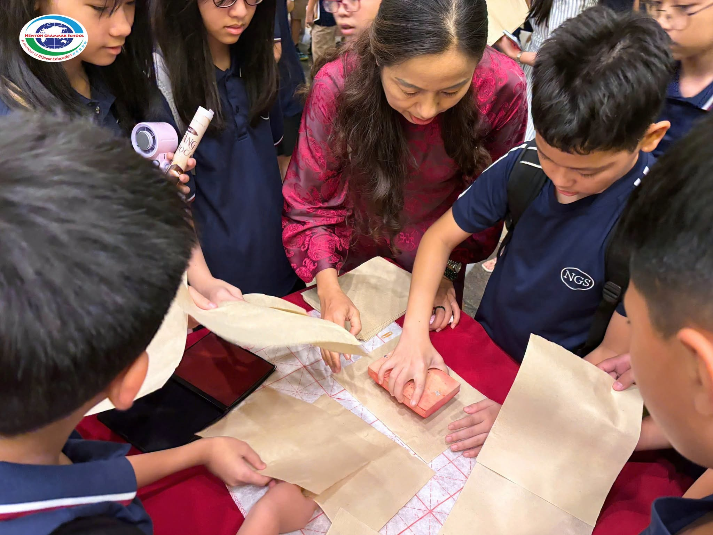
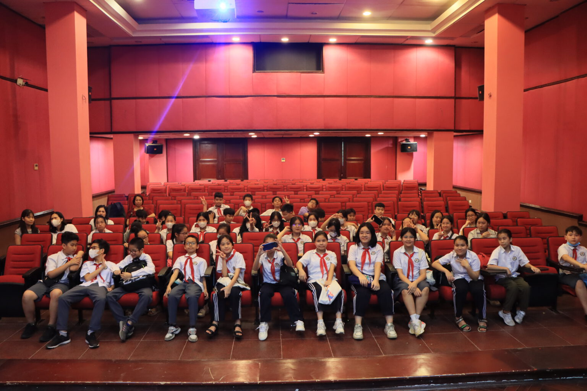

Trong bài
Làm thế nào để trẻ tiếp cận văn học và văn hóa truyền thống một cách sinh động ngoài lớp học? Những hoạt động trải nghiệm gắn với thực hành và hình ảnh có thể giúp hành trình khám phá trở nên gần gũi hơn. Tại Bảo tàng Văn học Việt Nam, hai hình thức trải nghiệm được giới thiệu là làm giấy dó và xem phim, mở ra cơ hội để trẻ tìm hiểu chất liệu truyền thống và tiếp nhận kiến thức thông qua hình thức trực quan.

1. Trải nghiệm làm giấy dó: Khám phá chất liệu truyền thống
Giấy dó là một chất liệu truyền thống gắn với lịch sử lưu giữ và truyền tải tri thức tại Việt Nam. Việc tìm hiểu về giấy dó giúp trẻ bước đầu nhận biết mối liên hệ giữa chất liệu làm giấy, hoạt động viết và quá trình bảo tồn những giá trị văn hóa qua các thế hệ.

Thông qua hoạt động trải nghiệm làm giấy dó, trẻ có cơ hội tiếp cận một công đoạn thủ công truyền thống thay vì chỉ quan sát hoặc nghe giới thiệu. Quá trình thực hành có thể khơi gợi sự tò mò về cách con người tạo ra vật liệu để ghi chép, sáng tác và lưu giữ thông tin trước khi các phương tiện hiện đại phổ biến.
Hoạt động này cũng tạo điều kiện để trẻ rèn luyện tính kiên nhẫn, khả năng quan sát và sự khéo léo. Khi được hướng dẫn phù hợp với độ tuổi, các em có thể hiểu rõ hơn rằng đằng sau một tờ giấy là quá trình lao động, kỹ thuật và kinh nghiệm được tích lũy qua thời gian.
2. Xem phim: Tiếp nhận kiến thức qua hình ảnh và âm thanh
Bên cạnh hoạt động thực hành, xem phim là hình thức giúp trẻ tiếp nhận nội dung bằng hình ảnh, âm thanh và cách kể chuyện trực quan. So với việc chỉ đọc thông tin, phim có thể giúp các em dễ hình dung bối cảnh, nhân vật và những nội dung được giới thiệu.

Hoạt động xem phim trong chuyến tham quan có thể bổ trợ cho quá trình tìm hiểu văn học và văn hóa. Khi được lựa chọn phù hợp với lứa tuổi, nội dung phim tạo cơ hội để trẻ mở rộng hiểu biết, phát triển khả năng tập trung và hình thành câu hỏi về những điều mình quan sát được.
Khi đăng ký hoặc lên kế hoạch tham quan, người phụ trách nên xác nhận thời lượng phim, nội dung, độ tuổi phù hợp, ngôn ngữ sử dụng và lịch chiếu thực tế với bảo tàng.
3. Chuẩn bị cho trẻ tham gia hoạt động trải nghiệm
Để chuyến tham quan diễn ra thuận lợi, phụ huynh và nhà trường nên tìm hiểu trước thông tin về hai hoạt động và lựa chọn phương án phù hợp với độ tuổi, số lượng trẻ cũng như mục tiêu giáo dục.
Trong quá trình tham gia, trẻ cần làm theo hướng dẫn của người phụ trách, sử dụng vật liệu đúng cách và giữ gìn không gian chung. Giáo viên hoặc phụ huynh nên phổ biến trước các quy tắc cần thiết, đồng thời hỗ trợ trẻ khi thực hành.
Hai hoạt động làm giấy dó và xem phim đem đến những cách tiếp cận khác nhau. Khi được tổ chức phù hợp, đây có thể là cơ hội để trẻ mở rộng hiểu biết về văn hóa, nuôi dưỡng trí tò mò và làm phong phú thêm trải nghiệm học tập ngoài lớp học.
Bảo tàng Văn học Việt Nam